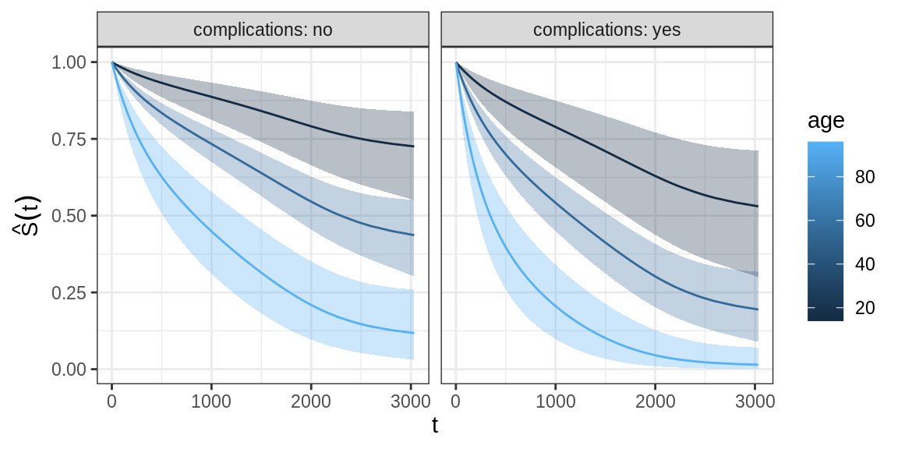

Survival analysis entails a set of standard tasks beyond model estimation which need to be performed in most real world applications. These task include:
- extraction/visualization of the predicted (cumulative) hazards or survival
- summary/visualization of estimated effects probabilities for specific covariate specifications
- visualization of non-linear covariate effects
- …
The pammtools package provides many convenience functions to facilitate these tasks. The overall philosophy of the package is to provide functions that return the underlying data used for visualization in a tidy format (Wickham and others 2014), such that everybody can use familiar tools for further processing. In addition, some (high level) convenience functions for visualization are also included.
To illustrate the usual workflow and some of the convenience functions provided by pammtools, we will use the tumor in the following sections. For a more complete overview see Bender and Scheipl (2018).
Hazard, cumulative hazard and survival probabilities
Often one is interested in calculating the hazard, cumulative hazard or survival probability given specific values for some covariates (while other covariates are fixed at their mean values). For PAMMs, one usually also needs to create a data set where all intervals occur, in order to be able to calculate predicted values at different time points. pammtools provides a flexible interface to create such data sets (make_newdata) and the functions
add_hazard-
add_cumu_hazardand add_surv_prob
to add respective predicted values (including confidence intervals) of the respective quantities. We illustrate the workflow using the tumor data and the model given below:
ped <- tumor %>% as_ped(Surv(days, status)~ age + sex + complications, id = "id") pam <- gam(ped_status ~ s(tend) + sex + age + complications, data = ped, family = poisson(), offset = offset)
In the following, we create a new data set that contains all intervals as well as mean values for all other covariates. Note that within make_newdata you can specify the desired covariate values by using any function applicable to the data type of the respective column. The new data will contain one row for each combination of the two variables (similar to expand.grid):
ped_df <- ped %>% make_newdata(tend = unique(tend), age = seq_range(age, n = 3))
Calling the respective functions, we can add the (predicted) hazard to the newly created data.
Hazard
ped_df <- ped_df %>% add_hazard(pam) ped_df %>% select(interval, hazard, ci_lower, ci_upper) %>% head()
## interval hazard ci_lower ci_upper
## 1 (0,1] 0.0001955248 0.0001095045 0.0003491175
## 2 (1,2] 0.0001952127 0.0001093736 0.0003484204
## 3 (2,3] 0.0001949011 0.0001092426 0.0003477254
## 4 (3,5] 0.0001942794 0.0001089804 0.0003463418
## 5 (5,6] 0.0001939693 0.0001088492 0.0003456532
## 6 (6,7] 0.0001936596 0.0001087179 0.0003449668## interval hazard ci_lower ci_upper
## 973 (2393,2443] 0.0006260640 0.0003516509 0.001114617
## 974 (2443,2488] 0.0006009808 0.0003308557 0.001091648
## 975 (2488,2588] 0.0005464595 0.0002854032 0.001046302
## 976 (2588,2595] 0.0005427429 0.0002822783 0.001043544
## 977 (2595,2808] 0.0004382256 0.0001914665 0.001003004
## 978 (2808,3034] 0.0003472230 0.0001127654 0.001069155Which in turn can be conveniently plotted using respective functions, e.g.
ggplot(ped_df, aes(x = tend, group = age)) + geom_stephazard(aes(y = hazard, col = age)) + geom_stepribbon(aes(ymin = ci_lower, ymax = ci_upper, fill = age), alpha = 0.2) + ylab(expression(hat(lambda)(t))) + xlab(expression(t))
Hazard Ratio
The hazard ratio can be calculated by specifying the reference argument:
# the code below gives hazard reatio of a 30 year old relative to a 58 year old (cp) # ped %>% # make_newdata(age = c(30)) %>% # add_hazard(pam, reference = list(age = c(58))) %>% # select(hazard, ci_lower, ci_upper) # -> 30 year old has about half the risk of a 58 year old
This might seem a little convoluted, but can be easily generalized in case of time-varying effects, time-dependent covariates, cumulative effects, etc.
Cumulative hazard
Analogously, we can obtain the cumulative hazard (piece-wise linear function). Note that for the cumulative hazard and survival probability it is important to group the data accordingly, such that the cumulative hazard is cumulated for each value of the grouping variable. Otherwise it would be cumulated over the whole data set (which is usually not intended, except if the specified variable is a time-dependent covariate).
ped_df %>% group_by(age) %>% add_cumu_hazard(pam) %>% ggplot(aes(x = tend, y = cumu_hazard, ymin = cumu_lower, ymax = cumu_upper, group = age)) + geom_hazard(aes(col = age)) + geom_ribbon(aes(fill = age), alpha = 0.2) + ylab(expression(hat(Lambda)(t))) + xlab(expression(t))
Survival probability
ped_df %>% group_by(age) %>% add_surv_prob(pam) %>% ggplot(aes(x = tend, y = surv_prob, ymax = surv_lower, ymin = surv_upper, group = age)) + geom_line(aes(col = age)) + geom_ribbon(aes(fill = age), alpha = 0.2) + ylab(expression(hat(S)(t))) + xlab(expression(t))
This approach is very convenient, as it can be extended to arbitrary covariate specifications:
ped_df_sex <- ped %>% make_newdata(tend = unique(tend), age = seq_range(age, 3), complications = levels(complications)) %>% group_by(complications, age) %>% add_surv_prob(pam) ggplot(ped_df_sex, aes(x = tend, y = surv_prob, group = age)) + geom_ribbon(aes(ymin = surv_lower, ymax = surv_upper, fill = age), alpha = 0.3) + geom_surv(aes(col = age)) + ylab(expression(hat(S)(t))) + xlab(expression(t)) + facet_wrap(~complications, labeller = label_both)

Visualization of non-linear covariate effects
Data sets for the visualization of the (non-linear) effect of a continuous covariates can be created in a similar fashion. For illustration, we add a non-linear age effect to the previous model (see also high level functions?gg_smooth and ?gg_tensor and gg_re for mgcv::plot.gam like plots):
ped <- tumor %>% as_ped(Surv(days, status)~ age + sex + complications + charlson_score, id = "id") pam <- gam(ped_status ~ s(tend) + sex + s(age) + complications , data = ped, family = poisson(), offset = offset)
Using make_newdata and add_term we obtain:
term_charlson <- ped %>% make_newdata(age = seq_range(age, n = 25)) %>% add_term(pam, term = "age", reference = list(age = mean(.$age))) ggplot(term_charlson, aes(x = age, y = fit)) + geom_line() + geom_ribbon(aes(ymin = ci_lower, ymax = ci_upper), alpha = 0.2)

Similarly, we could use high level function gg_slice to obtain the estimated effect of the age variable, relative to the mean age and age of 30, respectively:

References
Bender, Andreas, and Fabian Scheipl. 2018. “Pammtools: Piece-Wise Exponential Additive Mixed Modeling Tools.” arXiv:1806.01042 [Stat]. http://arxiv.org/abs/1806.01042.
Wickham, Hadley, and others. 2014. “Tidy Data.” Journal of Statistical Software 59 (10): 1–23.